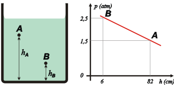

NO ME SALEN
EJERCICIOS RESUELTOS DE FÍSICA DEL CBC
FLUIDOS - PRINCIPIO DE ARQUÍMEDES |
|

|
| |
| NMS 39*) En el gráfico se representa la presión absoluta en función de la altura en el seno de un líquido desconocido. (Atención: es función de la altura, no de la profundidad). |
|  |
a) ¿De qué líquido se trata?
b) Calcule la densidad del líquido.
c) Considerando que la presión atmosférica es normal, ¿a qué altura, respecto de la base del recipiente, está la superficie del líquido?
d) Exprese la presión manométrica en A en pascales y en centímetros de mercurio.
|
|
| *Ejercicio nro. 16 de la Guía de ejercicios edición 2019. |
|
|
|
a) Imposible saber de qué íquido se trata. Aún conociendo su densidad, puede haber muchos líquidos que tengan la misma densidad. Y te recomiendo que no lo pruebes, que no lo bebas, no es el modo más saludable de averiguarlo.
b) Esta parte es más sencilla. Obviamente, te lo describe el principio general de la hidrostática:
ΔPAB = ρ . g . ΔyAB
Donde y es profundidad (se mide hacia abajo), y no olvides que No me salen utiliza ρ en vez de δ para densidad.
La diferencia de presión entre los dos puntos vale 1 atm, y la diferencia de profundidad 76 cm. De modo que la densidad valdrá:
ρ = ΔPAB / g . ΔyAB
ρ = 1 atm / 10 m/s² . 76 cm
ρ = 1 atm / 10 m/s² . 0,76 m
ρ = 0,13 atm / m²/s²
Pero dar eso como respuesta es muy berreta, nadie mide densidades en esas unidades. Pasemos las atmósferas a pascales, recordando que 1 atm = 101.300 Pa
ρ = 13.330 Pa / m²/s²
Recordando que 1 Pa = 1 N/m² y que 1 N = 1 kg.m/s²... |
|
|
|
|
|
Es la densidad del mercurio, yo le pondría una ficha, porque de esa densidad sí que no hay otro.
c) Para hallar la altura en un punto de la superficie volvés a usar el principio general de la hidrostática. Esta vez comparando un punto de la superficie (que se encuentra a una altura medida desde el fondo hsup) en el que la presión vale 1 atmósfera, o sea, 101.300 pascales, con otro punto de altura y presión conocidas o sea, el punto A o el punto B, como prefieras. Por ejemplo:
ΔysupA = ΔPsupA / ρ . g
ΔysupA = 50.650 Pa / 13.330 Kg/m³. 10 m/s²
ΔysupA = 0,38 m
Esa es la diferencia de altura entre el punto A y la superficie, de modo que alcanza con sumarle a ese valor la altura de A... |
|
|
|
|
|
Y las preguntas del ítem d) son demasiado pavas (recordando que suponemos que el líquido es mercurio)... pero no te olvides que ahora te preguntan por la presión manométrica (o sea, considerando la presión en la superficie vale cero). Pero hacelo, y sorprendete.
NOTA IMPORTANTE: si hiciste el ítem anterior (hacelo) tal vez te hayas dado cuenta del centro que te tiró el autor del ejercicio... sí, ya sé: es un centro para ñoños... pero con un poco de experiencia vos también vas a poder cabecearlo y meter el gol.
Fijate: el autor eligió dos puntos A y B (podría haber elegido otros dos cualesquiera) tal que la diferencia de presión entre ambos vale justo 1 atm, o sea 76 cmHg... y la diferencia de altura entre esos puntos es justamente 76 cm. ¡No puede caber duda de que el líquido es mercurio! Ya que eso sólo ocurre con el mercurio. No te olvides que la escala de presiones en cmHg nació junto con el experimento de Torricelli, que midió que la presión de 1 atm equivale a una diferencia de altura de 76 cm de mercurio.
|
|
|
| |
|
 |
DESAFÍO: ¿Cuánto vale la presión en el fondo del recipiente? |
|
| |
 |
|
| Algunos derechos reservados.
Se permite su reproducción citando la fuente legítima, o sea, este sitio. Última actualización
dic-19. Buenos Aires, Argentina. |
|
|
| | |
|
|